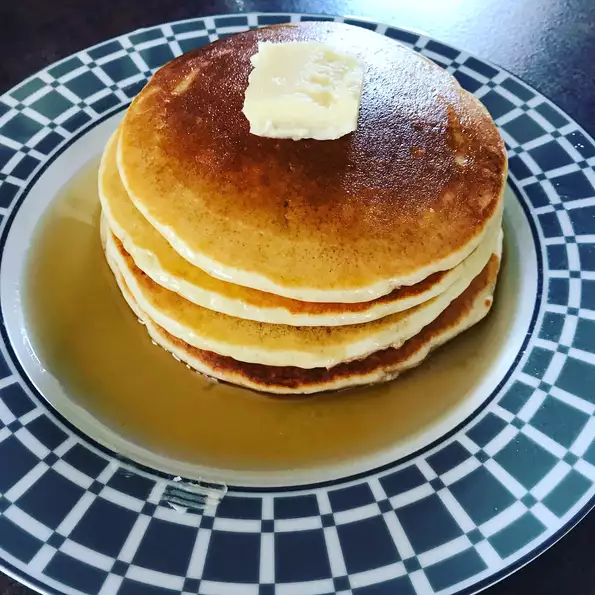

Pancakes

About this recipe
These pancakes are not too thick, not too thin, but tender, light, buttery, and delicious. Anybody can add water to a boxed pancake mix, but you're better than that!
Ingredients
- 1 ½ cups all-purpose flour
- 3 ½ teaspoons baking powder
- 1 tablespoon white sugar
- 1 teaspoon salt
- 1 ¼ cups milk
- 3 tablespoons butter, melted
- 1 egg
- cooking spray
Directions
- Sift together flour, baking powder, sugar, and salt in a large bowl. Whisk in milk, melted butter, and egg until combined. Let batter rest for 5 minutes.
- Preheat a large skillet over medium-high heat. Spray with cooking spray.
- Pour batter into the hot skillet, about 1/4 cup batter for each pancake. Cook until bubbles appear on the sides and center of each pancake, 2 to 3 minutes. Flip and cook until the bottom is golden, 1 to 2 minutes.